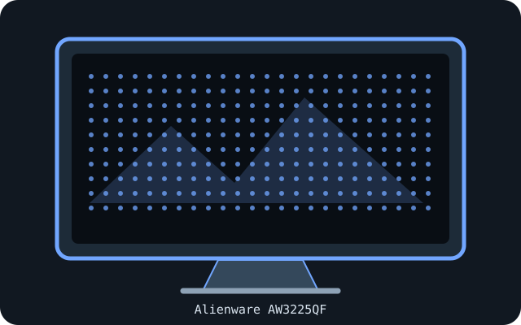

[ INDIVIDUAL COMPONENT // DISPLAYS ]
Dell Alienware AW3225QF
31.6-inch curved 4K QD-OLED gaming monitor with 240 Hz operation.

IDENTIFICATION: Confirm the complete model/SKU and region on the rear label. Specifications below reflect manufacturer-published information for this model family; input timings and power supplies may vary with source, firmware, region and operating mode.
Specifications
| Catalog subcategory | OLED displays |
|---|---|
| Exact product / family | Dell Alienware AW3225QF |
| Panel technology / size | 31.6-inch curved Quantum Dot OLED (QD-OLED), 16:9 |
| Native resolution | 3840 × 2160 |
| Native refresh rate | Up to 240 Hz at native resolution with a compatible DisplayPort/HDMI source and link configuration. |
| HDR / luminance / contrast | VESA DisplayHDR True Black 400; 250 cd/m² typical and up to 1000 cd/m² peak in small HDR highlights. Dynamic contrast is rated 1,500,000:1. |
| Inputs and I/O | 2 × HDMI 2.1; 1 × DisplayPort 1.4; USB 3.2 Gen 1 hub, upstream and downstream ports; headphone out. |
| Stand / VESA | Height-adjustable, tilt and swivel stand; VESA 100 × 100 mm compatible. |
| Power | AC mains input; consult the model-specific Dell manual and rear label for regional voltage and maximum draw rather than inferring consumption from other Alienware models. |
Signal and compatibility notes
For 4K at 240 Hz, confirm GPU support, DisplayPort DSC or HDMI 2.1 FRL capability, certified cable and selected color-depth settings. HDMI 2.1 supports modern consoles, whose maximum modes may differ from PC timing. Follow OLED care guidance and avoid unattended static images.
Native resolution and refresh depend on the connected computer's GPU, supported timing, port, cable, firmware, operating system and selected color format. Confirm capabilities in the model-specific manual rather than inferring them from connector shape alone.
OLED care and preservation
OLED panels can retain static imagery. Enable the manufacturer's panel-protection, pixel-shift and refresh features; follow on-screen prompts and documented care intervals. Avoid disconnecting power during a panel maintenance cycle, and record operating hours, firmware, calibration state and image condition for archival systems.
Manufacturer manuals & sources
- Dell — AW3225QF official product manual and specificationsManufacturer-hosted model information; verify the exact regional SKU, revision, and current manual before installation.
- Dell — AW3225QF support and documentationManufacturer-hosted model information; verify the exact regional SKU, revision, and current manual before installation.